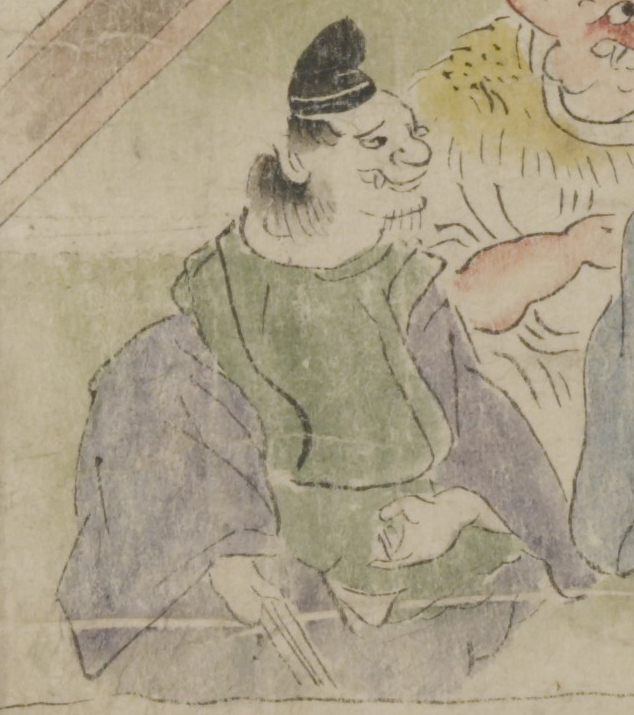

烏帽子をかぶった鬼。髪は後ろでまとめているように見え、上顎から牙が生え、顎ひげを生やしている。緑と紺の着物を着け、右手に扇子を持って座っている。
著作者：坂本弥一郎徳定／出典：親書誌：U426_nichibunken_0080：伊吹山酒呑童子絵巻；イブキヤマシュテンドウジエマキ／日付：2007／資源識別子：U426_nichibunken_0080_0004_0007
Copyright (c)2010- International Research Center for Japanese Studies, Kyoto, Japan. All rights reserved.